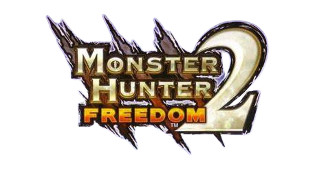
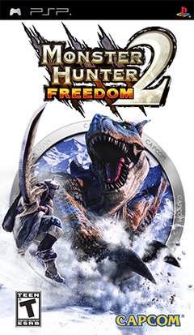

<!DOCTYPE html>
<html>
    <title>Monster Hunter Freedom 2</title>
    <link rel="stylesheet" href="../style.css">
    <link rel="icon" href="../gameImages/mhf2Logo.png">
</html>
<body>
    <div>
        <button type="button" onclick="window.location.href = '../index.html';">BACK</button>
    <h1></h1>
    <p>Monster Hunter Freedom 2 or also Monster Hunter Portable 2nd (asia) is the first Monster Hunter title to be released world-wide.</p>
    <p>As <a href="mhf.html">Monster Hunter Freedom</a> Monster Hunter Freedom 2 is based on its first game of the generation Monster Hunter 2, but not all features were ported.</p>
    
    <table>
        <tr>
            <td>Release Dates</td>
            <td>
                <ul>
                    <li>Japan - 22nd February 2007</li>
                    <li>Korea - 28th August 2007</li>
                    <li>North America - 29th August 2007</li>
                    <li>Europe - 7th September 2007</li>
                    <li>Australia - 12th September 2007</li>
                </ul>
            </td>
        </tr>
        <tr>
            <td>Flagship Monster</td>
            <td>Tigrex</td>
        </tr>
    </table>
</div>
<footer>
    
    <p>I'm Lukas and am a huge Monster Huner fan and that's why I made my wiki about the game.</p>
</footer>
</body>